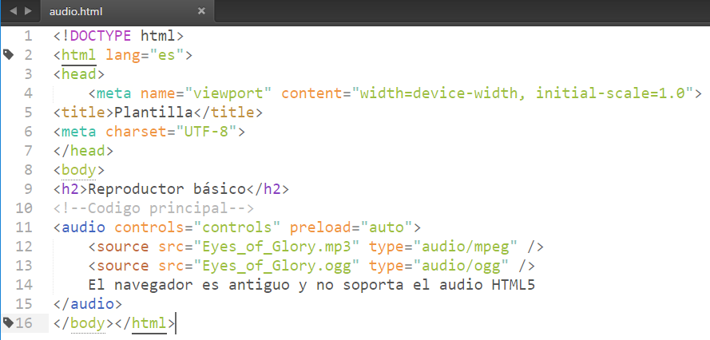

Diferentes estándares de audio
Para utilizar audio en HTML5 sin usar plugins externos ocurre algo parecido que con el vídeo. Existen diferentes formatos de audio y desgraciadamente no existe ninguno que funcione perfectamente en todos los navegadores, por lo que al menos tendremos que utilizar dos formatos para poder abarcarlos a todos.
Estos 2 formatos de audio mayoritarios son:
El formato MP3 (ficheros con extensión .mp3) abarca a la mayoría de navegadores, excepto a FireFox. Aunque está ampliamente arraigado, está sujeto a patentes.
El formato OGG Vorbis (ficheros con extensión .ogg) no está sujeto a patentes (igual que ocurre en el caso del vídeo). No es aceptado por Internet Explorer ni por Safari.
En el tag 'audio' es posible incorporar algunos atributos de control del audio, como son:
- controls: Establece si tendrá la barra de navegación (play, stop, volumen...) o no
- autoplay: Indica si el audio se inicia automáticamente al cargar la página html
- loop: Establece si al acabar el audio, éste debe volver a empezar indefinidamente
- preload: Indica si el audio se empieza a cargar cuando el navegador carga la página html
Ejemplo Practico

Hit Mundial De Arcangel